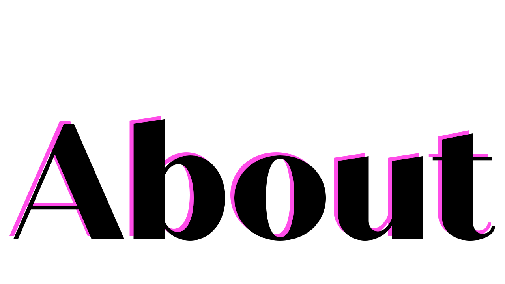
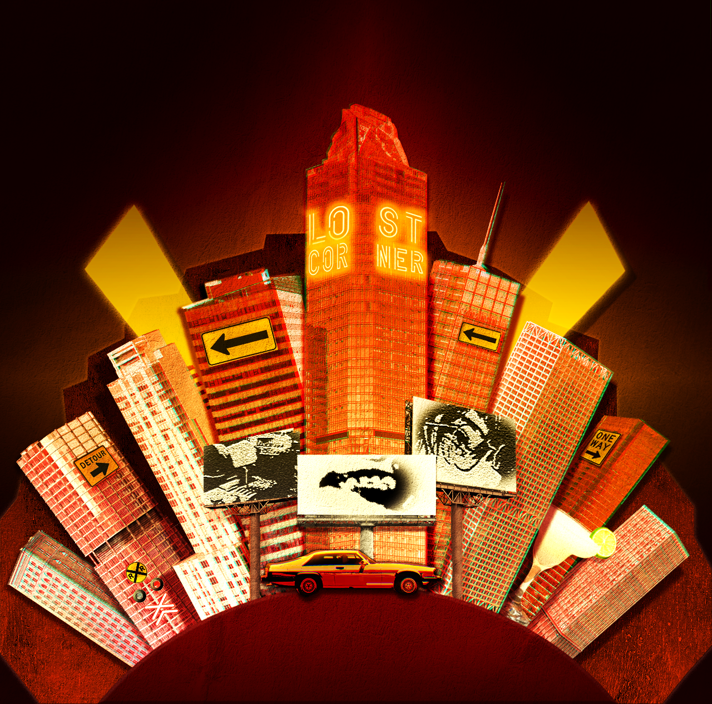
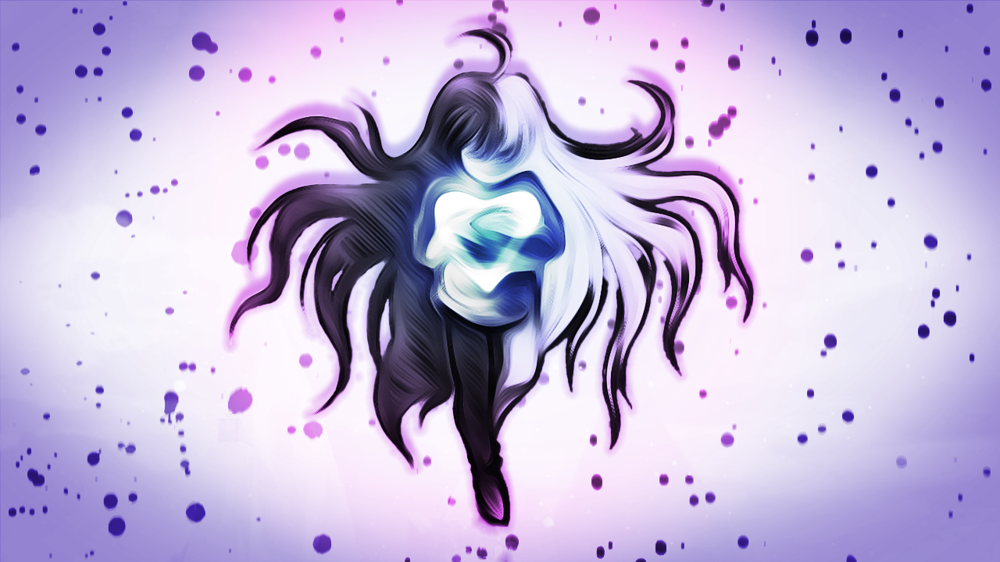
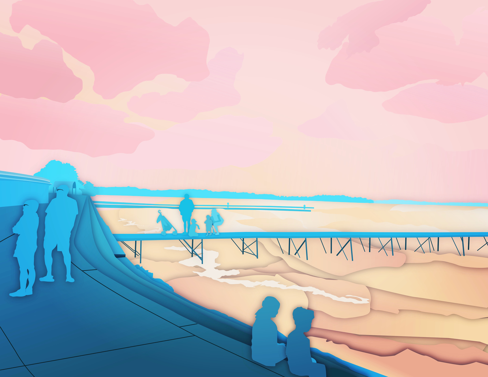
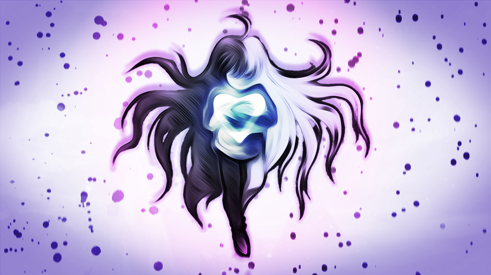
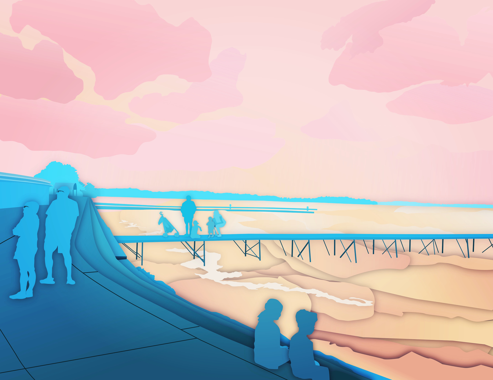
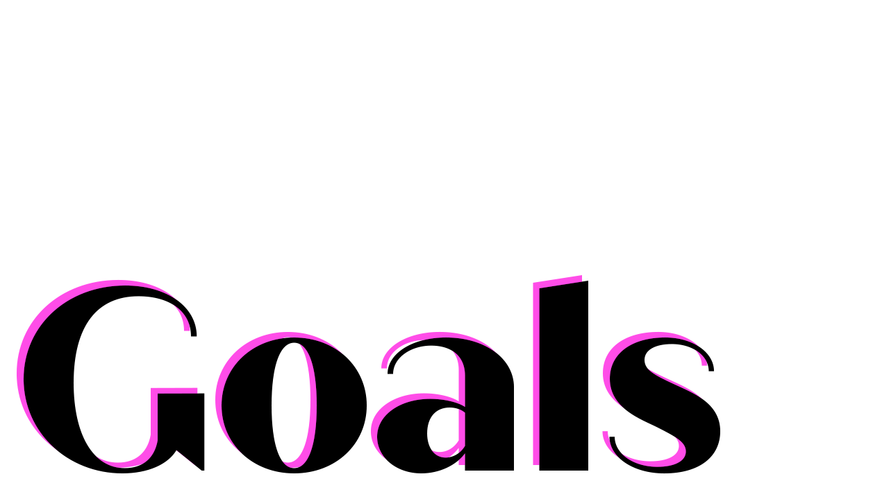
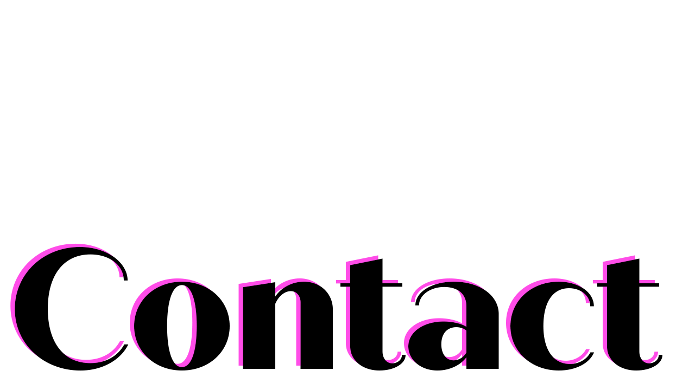

Hi! I'm Rylie Trager.

I like making things. I'm studying Strategic Communications and Creative Technology/Design at CU Boulder. I'm trained in Media Design and various Audiovisual editing softwares. Below is some of my work. I hope you enjoy!

 




When it comes to design, I love seeing well thought-out color and flair, like that of pop-art and art-deco. I've been teaching myself to draw by hand more, so I love analyzing things like gesture and form in the context of design, combining two worlds that I love exploring. More than anything, my creative works are fueled by my love of discovery. Whether it's delving into skills like color theory or practicing challenges like perspective, I derive fulfillment from witnessing my own growth as an artist and person. There's a certain joy to simply pouring love into creating something, especially upon seeing that you're capable of more of it than you think.

-Continue to get out of bed in the morning.
-Learn advanced anatomy and lighting.
-Find a workflow that suits me.
-Adopt a cat probably.

847-284-1101.
rylie.trgr@gmail.com